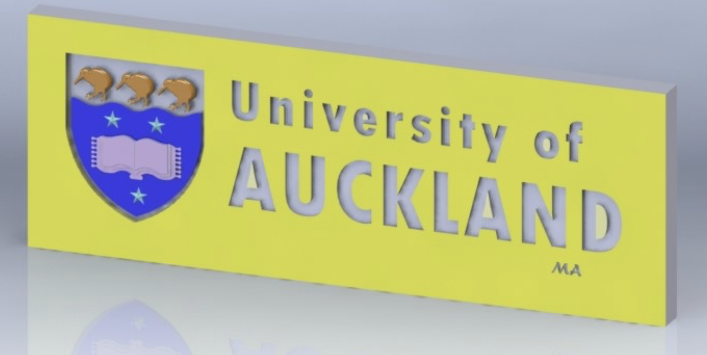
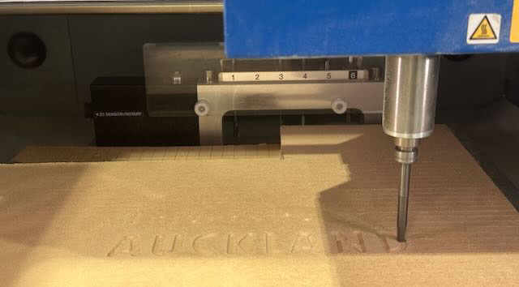
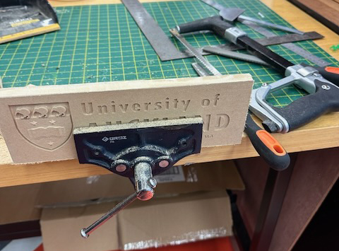
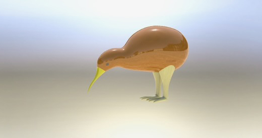
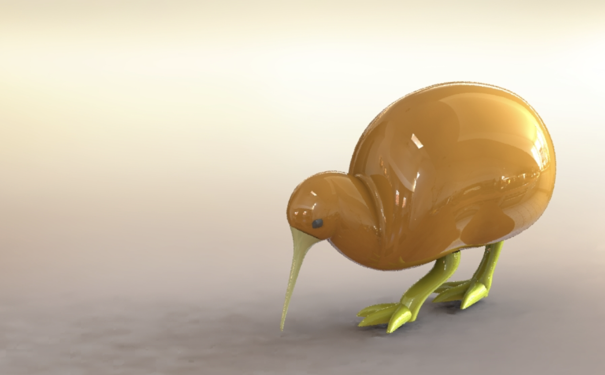
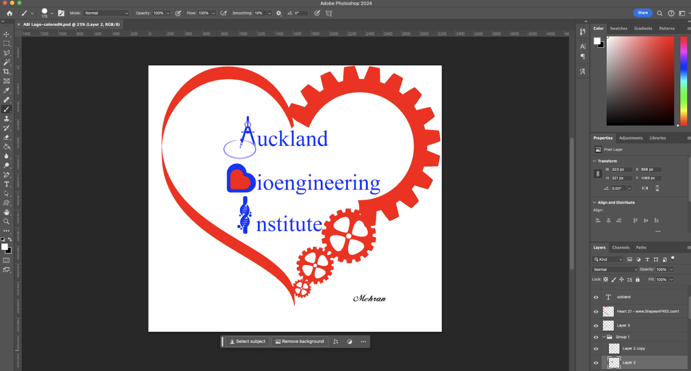
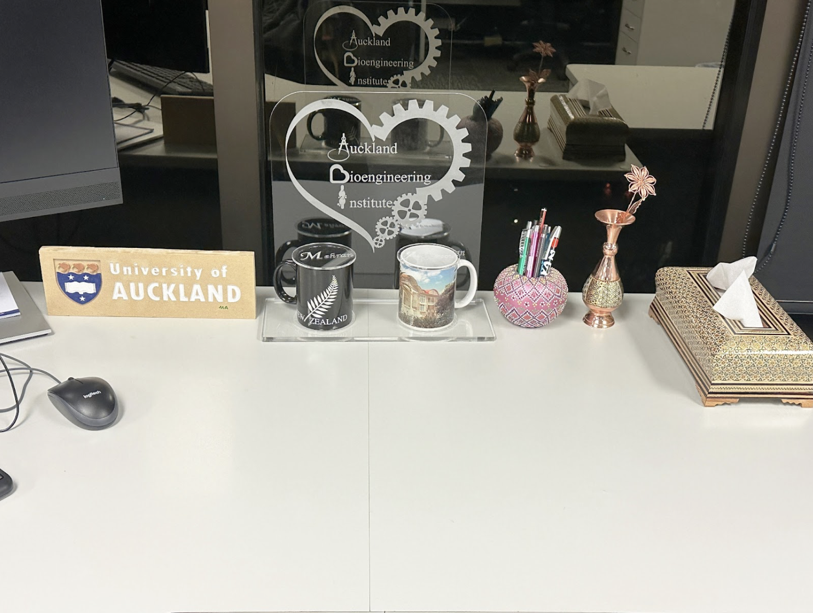
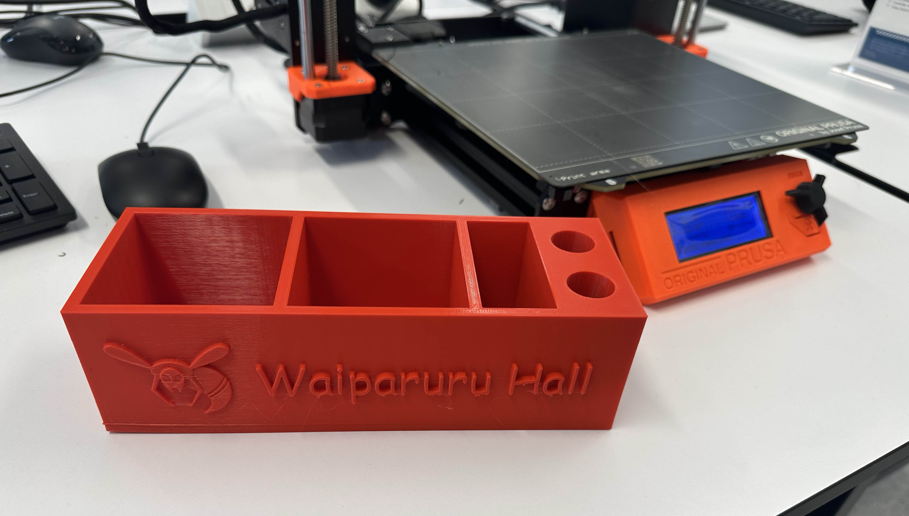
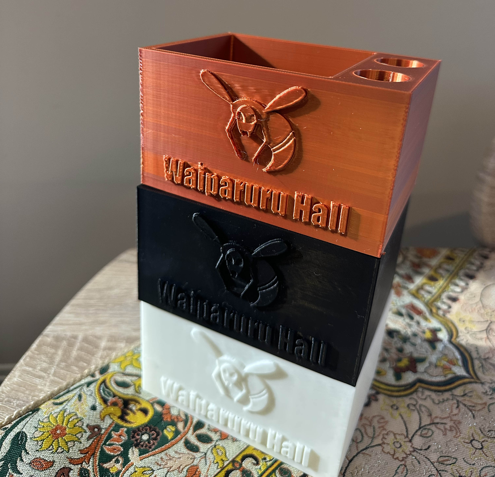

The CNC carved logo of The University of Auckland
I have designed a logo for The University of Auckland that can be carved onto a wooden sheet using a CNC machine. I created the 3D model using SolidWorks CAD software. Then, using a small CNC machine at the University of Auckland's Unleash Space, I carved the design onto a wooden sheet. Afterward, I painted the piece using small brushes to complete its final appearance. I'll explain the processes below:
- I created the 3D file in Solidworks.
- The file has been saved as a STL format and transfered to the PC connected to the CNC machine.
- At first, a thick matt has been used to carve the coarse shape.
- In the next step, a smaller and thinner matt has been used to carve the fine curves out of the wood.
- The wooden piece has been cut using a saw into a rectangular frame.
- The carved wood has been painted with brush and acrylic colors.

Design render with Solidworks

CNC machine carving the wooden sheet

Cutting out the frame
Final wooden frame with the logo of the university
3D printed Kiwi bird
I have designed a Kiwi bird to be printed with a 3D printer. I created the 3D model using SolidWorks CAD software. Then, using Prusa 3D printer, I have printed the object.

Kiwi bird

Kiwi bird
Designing a Kiwi bird in Solidworks
Designing a Kiwi bird in Solidworks
Laser cut ABI Logo
I am interested in designing artefacts and logos. So I designed a logo fo Auckland Bioengineering Institute using Photoshop.

Designing with Photoshop

Laser cut logo
Stationery Box for Waiparuru Hall
I have designed a stationaery box with the logo of Waiparuru Hall.

Stationaery box (large)

Stationery boxes (small)